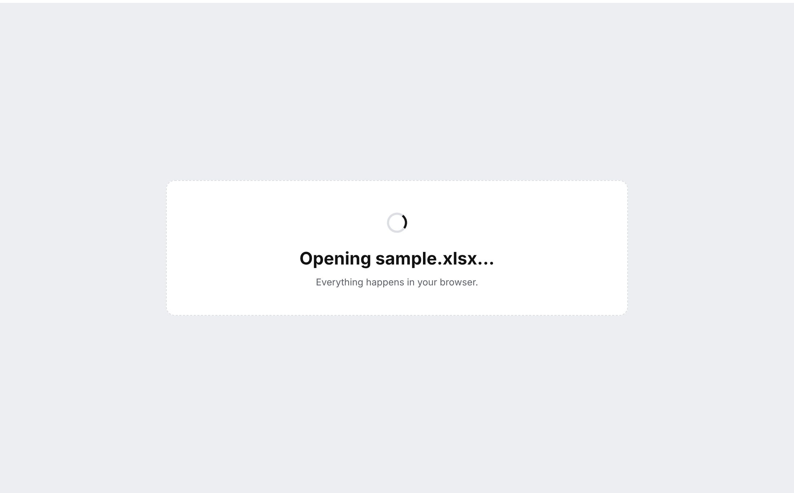
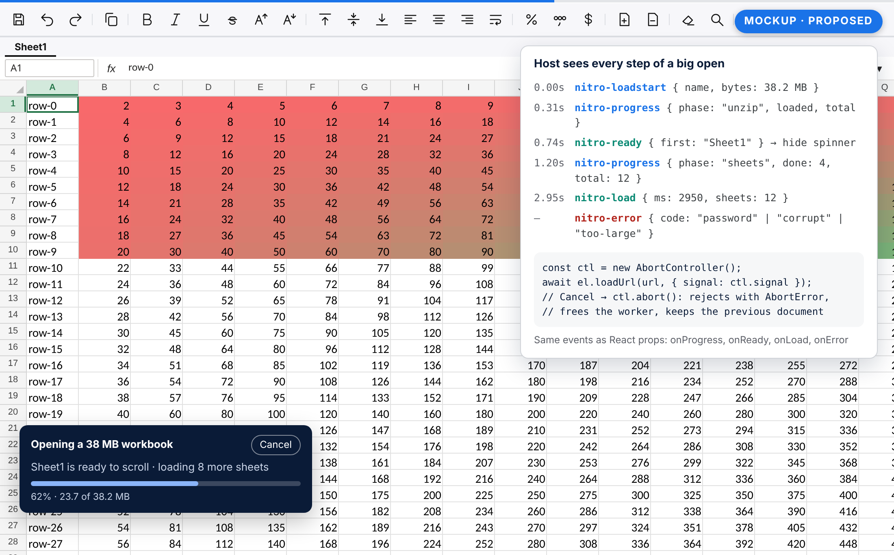
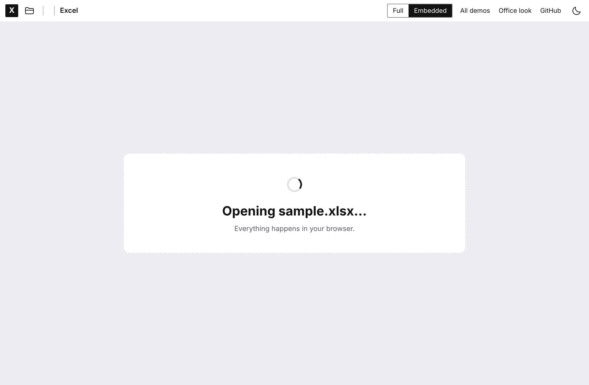
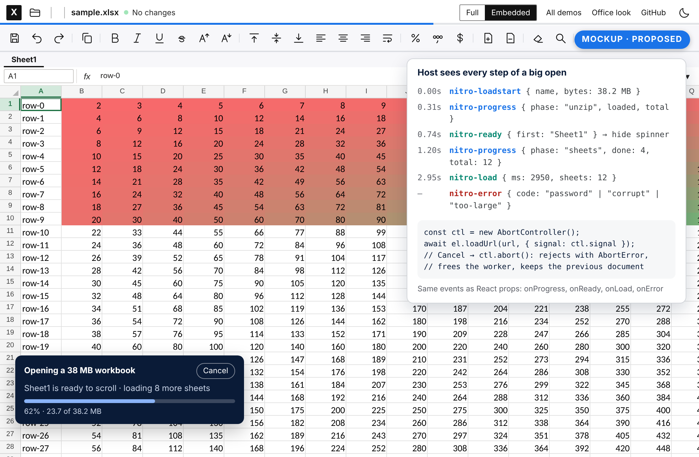

Let host apps show load progress, know when a big file is viewable, and cancel it
Approve: tap 👍 on the issue · Decline: tap 👎
Close-up of the change




Full screen


Today: while a workbook opens, the host can only show an indeterminate spinner. The element fires no progress, no 'first sheet is on screen' signal and no load error event, and loadUrl cannot be cancelled.


Mockup: the host shows a real progress bar and a toast with Cancel. Sheet1 is scrollable as soon as nitro-ready fires while the remaining sheets keep loading. The event log on the right shows the proposed events.
Tap an image to open it full size.
Why
Big workbooks are where Nitro has to feel fast, for example in previews of large Excel files kept on shared storage. Today the host cannot tell 'still unzipping' from 'hung', cannot say 'first sheet ready', and cannot stop a 40 MB open when the user clicks away. Embedding APIs from OnlyOffice (onAppReady / onDocumentReady / onError) and Collabora (App_LoadingStatus: Frame_Ready, Document_Loaded) both expose these milestones.
Definition of done
- <nitro-docx>, <nitro-xlsx> and <nitro-pptx> fire nitro-loadstart {name, bytes}, nitro-progress {phase, loaded, total} (at most once per frame), nitro-ready when the first page/sheet/slide is painted, nitro-load when everything is loaded, and nitro-error {code, message} for password-protected, corrupt and over-limit files.
- loadUrl, loadBuffer and loadFile accept {signal}; abort() rejects with AbortError, frees the worker and keeps the previous document and position.
- Typed event details in loader/index.d.ts and React props onProgress, onReady, onLoad and onError on <NitroViewer>; documented in the loader README with a copy-paste host example.
- Events never fire for reload() with keepPosition unless asked, never mark the document dirty and never move focus.
- Browser e2e test in demo/host-api covers event order, abort mid-load and each error code on an L-tier workbook; bundle-budget and all required checks green.
Approve: tap 👍 on the issue · Decline: tap 👎